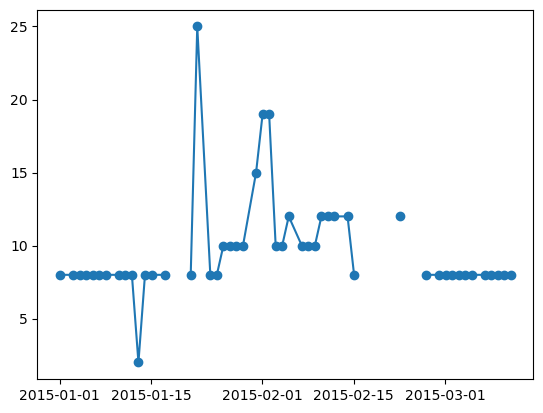
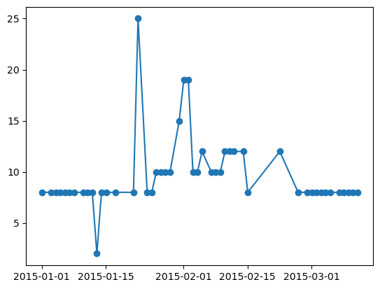
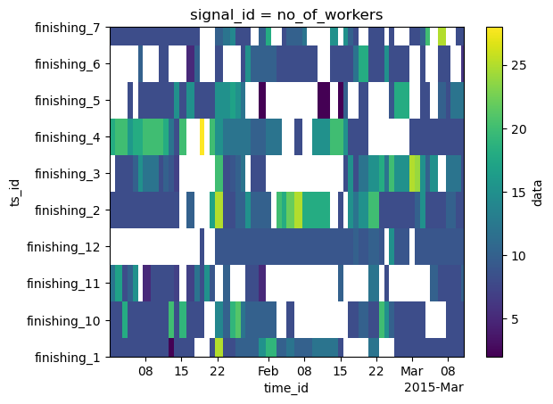
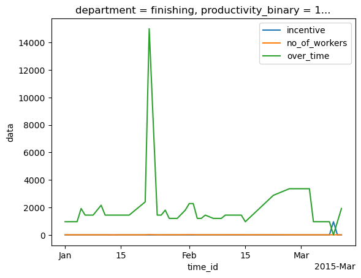

Quick Start
[155]:
import pandas as pd
import xarray as xr
List available datasets
To view available datasets, you can use the list_datasets function.
[156]:
from pyrregular import list_datasets
[157]:
print(list_datasets())
['Abf.h5', 'Ais.h5', 'AllGestureWiimoteX.h5', 'AllGestureWiimoteY.h5', 'AllGestureWiimoteZ.h5', 'Animals.h5', 'AsphaltObstaclesCoordinates.h5', 'AsphaltPavementTypeCoordinates.h5', 'AsphaltRegularityCoordinates.h5', 'CharacterTrajectories.h5', 'CombinedTrajectories.h5', 'DodgerLoopDay.h5', 'DodgerLoopGame.h5', 'DodgerLoopWeekend.h5', 'Garment.h5', 'Geolife.h5', 'GeolifeSupervised.h5', 'GestureMidAirD1.h5', 'GestureMidAirD2.h5', 'GestureMidAirD3.h5', 'GesturePebbleZ1.h5', 'GesturePebbleZ2.h5', 'JapaneseVowels.h5', 'Ldfpa.h5', 'MelbournePedestrian.h5', 'Mimic3.h5', 'PLAID.h5', 'Pamap2.h5', 'Physionet2012.h5', 'Physionet2019.h5', 'PickupGestureWiimoteZ.h5', 'Seabirds.h5', 'ShakeGestureWiimoteZ.h5', 'SpokenArabicDigits.h5', 'TDrive.h5', 'Taxi.h5', 'Vehicles.h5']
Loading the dataset from the online repository
Loading a dataset is as from the online repo (https://huggingface.co/datasets/splandi/pyrregular) is as simple as calling the load_dataset function with the dataset name.
[158]:
from pyrregular import load_dataset
[159]:
ds = load_dataset("Garment.h5")
The dataset is loaded as an xarray dataset. The dataset is saved in the default os cache directory, which can be found with:
import pooch
print(pooch.os_cache("pyrregular"))
You can also use xarray to directly load a local file. In this case, you have to specify our backend as pyrregular in the engine argument.
import xarray as xr
ds = xr.load_dataset("path/to/file.h5", engine="pyrregular")
You can view the underlying DataArray by calling the data variable.
[160]:
da = ds.data
[161]:
da
[161]:
<xarray.DataArray 'data' (ts_id: 24, signal_id: 9, time_id: 59)> Size: 329kB
<COO: shape=(24, 9, 59), dtype=float64, nnz=10267, fill_value=nan>
Coordinates:
day (time_id) <U9 2kB 'Thursday' ... 'Wednesday'
department (ts_id) <U9 864B 'finishing' ... 'sweing'
productivity_binary (ts_id) int32 96B 1 0 1 1 1 1 1 1 ... 1 1 0 0 0 0 1
productivity_class (ts_id) <U4 384B 'high' 'low' ... 'low' 'high'
productivity_numerical (ts_id) float32 96B 0.8126 0.6283 ... 0.7005 0.7503
quarter (time_id) <U8 2kB 'Quarter1' ... 'Quarter2'
* signal_id (signal_id) <U21 756B 'idle_men' ... 'wip'
split (ts_id) <U5 480B 'train' 'train' ... 'train' 'train'
team (ts_id) int32 96B 1 10 11 12 2 3 4 ... 3 4 5 6 7 8 9
* time_id (time_id) datetime64[ns] 472B 2015-01-01T01:00:00...
* ts_id (ts_id) <U12 1kB 'finishing_1' ... 'sweing_9'
Attributes:
_fixed_at: 2024-12-04T21:50:44.408790-12:00
_is_fixed: True
author: ['NA']
configs: {'default': {'task': 'classification', 'split': 'split', 'tar...
license: CC BY 4.0
source: https://archive.ics.uci.edu/dataset/597/productivity+predicti...
title: Productivity Prediction of Garment Employees[162]:
# the shape is (n_time_series, n_channels, n_timestamps)
da.shape
[162]:
(24, 9, 59)
[163]:
# the array is stored as a sparse array
da.data
[163]:
| Format | coo |
|---|---|
| Data Type | float64 |
| Shape | (24, 9, 59) |
| nnz | 10267 |
| Density | 0.8056340238543629 |
| Read-only | True |
| Size | 320.8K |
| Storage ratio | 3.22 |
[164]:
# dimensions contain the time series ids, signal ids and timestamps
da.dims
[164]:
('ts_id', 'signal_id', 'time_id')
[165]:
# e.g., these are the time series ids
da["ts_id"].data
[165]:
array(['finishing_1', 'finishing_10', 'finishing_11', 'finishing_12',
'finishing_2', 'finishing_3', 'finishing_4', 'finishing_5',
'finishing_6', 'finishing_7', 'finishing_8', 'finishing_9',
'sweing_1', 'sweing_10', 'sweing_11', 'sweing_12', 'sweing_2',
'sweing_3', 'sweing_4', 'sweing_5', 'sweing_6', 'sweing_7',
'sweing_8', 'sweing_9'], dtype='<U12')
[166]:
# there are also static variables, such as the class
da["productivity_binary"].data
[166]:
array([1, 0, 1, 1, 1, 1, 1, 1, 0, 0, 0, 0, 1, 1, 1, 1, 1, 1, 1, 0, 0, 0,
0, 1], dtype=int32)
[167]:
# the train/test split
da["split"].data
[167]:
array(['train', 'train', 'test', 'train', 'train', 'test', 'train',
'train', 'train', 'test', 'train', 'train', 'test', 'train',
'train', 'test', 'train', 'train', 'train', 'train', 'test',
'train', 'train', 'train'], dtype='<U5')
[168]:
# all the coordinates can be accessed via the `coords` variable
da.coords
[168]:
Coordinates:
day (time_id) <U9 2kB 'Thursday' ... 'Wednesday'
department (ts_id) <U9 864B 'finishing' ... 'sweing'
productivity_binary (ts_id) int32 96B 1 0 1 1 1 1 1 1 ... 1 1 0 0 0 0 1
productivity_class (ts_id) <U4 384B 'high' 'low' ... 'low' 'high'
productivity_numerical (ts_id) float32 96B 0.8126 0.6283 ... 0.7005 0.7503
quarter (time_id) <U8 2kB 'Quarter1' ... 'Quarter2'
* signal_id (signal_id) <U21 756B 'idle_men' ... 'wip'
split (ts_id) <U5 480B 'train' 'train' ... 'train' 'train'
team (ts_id) int32 96B 1 10 11 12 2 3 4 ... 3 4 5 6 7 8 9
* time_id (time_id) datetime64[ns] 472B 2015-01-01T01:00:00...
* ts_id (ts_id) <U12 1kB 'finishing_1' ... 'sweing_9'
[169]:
# metadata contains informations about the datasets and tasks
da.attrs
[169]:
{'_fixed_at': '2024-12-04T21:50:44.408790-12:00',
'_is_fixed': True,
'author': ['NA'],
'configs': {'default': {'task': 'classification',
'split': 'split',
'target': 'productivity_binary'},
'regression': {'task': 'regression',
'split': 'split',
'target': 'productivity_numerical'}},
'license': 'CC BY 4.0',
'source': 'https://archive.ics.uci.edu/dataset/597/productivity+prediction+of+garment+employees',
'title': 'Productivity Prediction of Garment Employees'}
Data Handling and Plotting
Data can be accessed with standard xarray methods.
[170]:
import matplotlib.pyplot as plt
import numpy as np
[171]:
# the first time series
da[0]
[171]:
<xarray.DataArray 'data' (signal_id: 9, time_id: 59)> Size: 9kB
<COO: shape=(9, 59), dtype=float64, nnz=392, fill_value=nan>
Coordinates:
day (time_id) <U9 2kB 'Thursday' ... 'Wednesday'
department <U9 36B 'finishing'
productivity_binary int32 4B 1
productivity_class <U4 16B 'high'
productivity_numerical float32 4B 0.8126
quarter (time_id) <U8 2kB 'Quarter1' ... 'Quarter2'
* signal_id (signal_id) <U21 756B 'idle_men' ... 'wip'
split <U5 20B 'train'
team int32 4B 1
* time_id (time_id) datetime64[ns] 472B 2015-01-01T01:00:00...
ts_id <U12 48B 'finishing_1'
Attributes:
_fixed_at: 2024-12-04T21:50:44.408790-12:00
_is_fixed: True
author: ['NA']
configs: {'default': {'task': 'classification', 'split': 'split', 'tar...
license: CC BY 4.0
source: https://archive.ics.uci.edu/dataset/597/productivity+predicti...
title: Productivity Prediction of Garment Employees[172]:
# the first channel of the first time series
da[0, 0]
[172]:
<xarray.DataArray 'data' (time_id: 59)> Size: 784B
<COO: shape=(59,), dtype=float64, nnz=49, fill_value=nan>
Coordinates:
day (time_id) <U9 2kB 'Thursday' ... 'Wednesday'
department <U9 36B 'finishing'
productivity_binary int32 4B 1
productivity_class <U4 16B 'high'
productivity_numerical float32 4B 0.8126
quarter (time_id) <U8 2kB 'Quarter1' ... 'Quarter2'
signal_id <U21 84B 'idle_men'
split <U5 20B 'train'
team int32 4B 1
* time_id (time_id) datetime64[ns] 472B 2015-01-01T01:00:00...
ts_id <U12 48B 'finishing_1'
Attributes:
_fixed_at: 2024-12-04T21:50:44.408790-12:00
_is_fixed: True
author: ['NA']
configs: {'default': {'task': 'classification', 'split': 'split', 'tar...
license: CC BY 4.0
source: https://archive.ics.uci.edu/dataset/597/productivity+predicti...
title: Productivity Prediction of Garment Employees[173]:
# to access the underlying sparse vector
da[0, 0].data
[173]:
| Format | coo |
|---|---|
| Data Type | float64 |
| Shape | (59,) |
| nnz | 49 |
| Density | 0.8305084745762712 |
| Read-only | True |
| Size | 784 |
| Storage ratio | 1.66 |
[174]:
# to access the underlying dense vector
da[0, 4].data.todense()
[174]:
array([ 8., 8., 8., 8., 8., 8., 8., 8., 8., 8., 2., 8., 8.,
8., nan, nan, nan, 8., 25., 8., 8., 10., 10., 10., 10., 15.,
19., 19., 10., 10., 12., 10., 10., 10., 12., 12., 12., 12., 8.,
nan, nan, nan, nan, 12., nan, nan, nan, 8., 8., 8., 8., 8.,
8., 8., 8., 8., 8., 8., 8.])
[175]:
# this vector contains a lot of nans, which are the padding necessary to have shared timestamps w.r.t. the whole dataset
np.isnan(da[0, 4].data.todense()).sum()
[175]:
10
[176]:
plt.plot(da[0, 4]["time_id"], da[0, 4], marker="o")
[176]:
[<matplotlib.lines.Line2D at 0x172a35b50>]

[177]:
# using the custom ".irr" accessor, we can filter out the nans to the minimum amount possible due to raggedness
np.isnan(da.irr[0, 4].data.todense()).sum()
[177]:
0
[178]:
plt.plot(da.irr[0, 4]["time_id"], da.irr[0, 4], marker="o")
[178]:
[<matplotlib.lines.Line2D at 0x172afec30>]

[179]:
# the fourth channel first 10 time series of the dataset, as a heatmap
da.irr[:10, 4].plot()
[179]:
<matplotlib.collections.QuadMesh at 0x172aefe90>

[180]:
# plotting some channels
da.irr[0, 2].plot(label=da.coords["signal_id"][2].item())
da.irr[0, 4].plot(label=da.coords["signal_id"][4].item())
da.irr[0, 5].plot(label=da.coords["signal_id"][5].item())
plt.legend()
[180]:
<matplotlib.legend.Legend at 0x30fe61be0>

Downstream Tasks
The xarray is nice, but not supported by basically any downstream library. Thus, we can convert it into a numpy array.
[181]:
%%time
# time series data, timestamps
X, T = da.irr.to_dense(
normalize_time=True, # normalize the time index to [0, 1]
)
CPU times: user 14.9 ms, sys: 1.57 ms, total: 16.4 ms
Wall time: 5.14 ms
[182]:
# the shape is (n_time_series, n_channels, n_timestamps), timestamps are returned as a separate channel, for downstream methods that are able to use them
X.shape, T.shape
[182]:
((24, 9, 59), (24, 1, 59))
[183]:
# static variables
Z = da.coords.to_dataset()[["split", "productivity_binary"]].to_pandas()
Z.head()
[183]:
| split | productivity_binary | department | productivity_class | productivity_numerical | team | |
|---|---|---|---|---|---|---|
| ts_id | ||||||
| finishing_1 | train | 1 | finishing | high | 0.812625 | 1 |
| finishing_10 | train | 0 | finishing | low | 0.628333 | 10 |
| finishing_11 | test | 1 | finishing | high | 0.874028 | 11 |
| finishing_12 | train | 1 | finishing | high | 0.922840 | 12 |
| finishing_2 | train | 1 | finishing | high | 0.819271 | 2 |
[184]:
# target and split
y, split = da.irr.get_task_target_and_split()
Train-test split
[185]:
X_train, X_test = X[split != "test"], X[split == "test"]
y_train, y_test = y[split != "test"], y[split == "test"]
X_train.shape, y_train.shape, X_test.shape, y_test.shape
[185]:
((18, 9, 59), (18,), (6, 9, 59), (6,))
Classification
We have several ready-to-use classifiers in the pyrregular package. Be sure to install the required dependencies.
[186]:
from pyrregular.models.rocket import rocket_pipeline
[187]:
%%time
model = rocket_pipeline
model.fit(X_train, y_train)
model.score(X_test, y_test)
[LightGBM] [Warning] There are no meaningful features which satisfy the provided configuration. Decreasing Dataset parameters min_data_in_bin or min_data_in_leaf and re-constructing Dataset might resolve this warning.
/Users/francesco/miniforge3/envs/timeseries_dl/lib/python3.12/site-packages/sktime/base/_base_panel.py:307: UserWarning: Data seen by SklearnClassifierPipeline instance has missing values, but this SklearnClassifierPipeline instance cannot handle missing values. Calls with missing values may result in error or unreliable results.
warn(msg, obj=self)
/Users/francesco/miniforge3/envs/timeseries_dl/lib/python3.12/site-packages/sktime/transformations/base.py:512: UserWarning: X is of equal length, consider using MiniRocketMultivariate for speedup and stability instead.
self._fit(X=X_inner, y=y_inner)
/Users/francesco/miniforge3/envs/timeseries_dl/lib/python3.12/site-packages/sklearn/utils/deprecation.py:151: FutureWarning: 'force_all_finite' was renamed to 'ensure_all_finite' in 1.6 and will be removed in 1.8.
warnings.warn(
[LightGBM] [Info] Number of positive: 11, number of negative: 7
[LightGBM] [Info] Total Bins 0
[LightGBM] [Info] Number of data points in the train set: 18, number of used features: 0
[LightGBM] [Info] [binary:BoostFromScore]: pavg=0.611111 -> initscore=0.451985
[LightGBM] [Info] Start training from score 0.451985
[LightGBM] [Warning] Stopped training because there are no more leaves that meet the split requirements
[LightGBM] [Warning] Stopped training because there are no more leaves that meet the split requirements
[LightGBM] [Warning] Stopped training because there are no more leaves that meet the split requirements
[LightGBM] [Warning] Stopped training because there are no more leaves that meet the split requirements
[LightGBM] [Warning] Stopped training because there are no more leaves that meet the split requirements
[LightGBM] [Warning] Stopped training because there are no more leaves that meet the split requirements
[LightGBM] [Warning] Stopped training because there are no more leaves that meet the split requirements
[LightGBM] [Warning] Stopped training because there are no more leaves that meet the split requirements
[LightGBM] [Warning] Stopped training because there are no more leaves that meet the split requirements
[LightGBM] [Warning] Stopped training because there are no more leaves that meet the split requirements
[LightGBM] [Warning] Stopped training because there are no more leaves that meet the split requirements
[LightGBM] [Warning] Stopped training because there are no more leaves that meet the split requirements
[LightGBM] [Warning] Stopped training because there are no more leaves that meet the split requirements
[LightGBM] [Warning] Stopped training because there are no more leaves that meet the split requirements
[LightGBM] [Warning] Stopped training because there are no more leaves that meet the split requirements
[LightGBM] [Warning] Stopped training because there are no more leaves that meet the split requirements
[LightGBM] [Warning] Stopped training because there are no more leaves that meet the split requirements
[LightGBM] [Warning] Stopped training because there are no more leaves that meet the split requirements
[LightGBM] [Warning] Stopped training because there are no more leaves that meet the split requirements
[LightGBM] [Warning] Stopped training because there are no more leaves that meet the split requirements
[LightGBM] [Warning] Stopped training because there are no more leaves that meet the split requirements
[LightGBM] [Warning] Stopped training because there are no more leaves that meet the split requirements
[LightGBM] [Warning] Stopped training because there are no more leaves that meet the split requirements
[LightGBM] [Warning] Stopped training because there are no more leaves that meet the split requirements
[LightGBM] [Warning] Stopped training because there are no more leaves that meet the split requirements
[LightGBM] [Warning] Stopped training because there are no more leaves that meet the split requirements
[LightGBM] [Warning] Stopped training because there are no more leaves that meet the split requirements
[LightGBM] [Warning] Stopped training because there are no more leaves that meet the split requirements
[LightGBM] [Warning] Stopped training because there are no more leaves that meet the split requirements
[LightGBM] [Warning] Stopped training because there are no more leaves that meet the split requirements
[LightGBM] [Warning] Stopped training because there are no more leaves that meet the split requirements
[LightGBM] [Warning] Stopped training because there are no more leaves that meet the split requirements
[LightGBM] [Warning] Stopped training because there are no more leaves that meet the split requirements
[LightGBM] [Warning] Stopped training because there are no more leaves that meet the split requirements
[LightGBM] [Warning] Stopped training because there are no more leaves that meet the split requirements
[LightGBM] [Warning] Stopped training because there are no more leaves that meet the split requirements
[LightGBM] [Warning] Stopped training because there are no more leaves that meet the split requirements
[LightGBM] [Warning] Stopped training because there are no more leaves that meet the split requirements
[LightGBM] [Warning] Stopped training because there are no more leaves that meet the split requirements
[LightGBM] [Warning] Stopped training because there are no more leaves that meet the split requirements
[LightGBM] [Warning] Stopped training because there are no more leaves that meet the split requirements
[LightGBM] [Warning] Stopped training because there are no more leaves that meet the split requirements
[LightGBM] [Warning] Stopped training because there are no more leaves that meet the split requirements
[LightGBM] [Warning] Stopped training because there are no more leaves that meet the split requirements
[LightGBM] [Warning] Stopped training because there are no more leaves that meet the split requirements
[LightGBM] [Warning] Stopped training because there are no more leaves that meet the split requirements
[LightGBM] [Warning] Stopped training because there are no more leaves that meet the split requirements
[LightGBM] [Warning] Stopped training because there are no more leaves that meet the split requirements
[LightGBM] [Warning] Stopped training because there are no more leaves that meet the split requirements
[LightGBM] [Warning] Stopped training because there are no more leaves that meet the split requirements
[LightGBM] [Warning] Stopped training because there are no more leaves that meet the split requirements
[LightGBM] [Warning] Stopped training because there are no more leaves that meet the split requirements
[LightGBM] [Warning] Stopped training because there are no more leaves that meet the split requirements
[LightGBM] [Warning] Stopped training because there are no more leaves that meet the split requirements
[LightGBM] [Warning] Stopped training because there are no more leaves that meet the split requirements
[LightGBM] [Warning] Stopped training because there are no more leaves that meet the split requirements
[LightGBM] [Warning] Stopped training because there are no more leaves that meet the split requirements
[LightGBM] [Warning] Stopped training because there are no more leaves that meet the split requirements
[LightGBM] [Warning] Stopped training because there are no more leaves that meet the split requirements
[LightGBM] [Warning] Stopped training because there are no more leaves that meet the split requirements
[LightGBM] [Warning] Stopped training because there are no more leaves that meet the split requirements
[LightGBM] [Warning] Stopped training because there are no more leaves that meet the split requirements
[LightGBM] [Warning] Stopped training because there are no more leaves that meet the split requirements
[LightGBM] [Warning] Stopped training because there are no more leaves that meet the split requirements
[LightGBM] [Warning] Stopped training because there are no more leaves that meet the split requirements
[LightGBM] [Warning] Stopped training because there are no more leaves that meet the split requirements
[LightGBM] [Warning] Stopped training because there are no more leaves that meet the split requirements
[LightGBM] [Warning] Stopped training because there are no more leaves that meet the split requirements
[LightGBM] [Warning] Stopped training because there are no more leaves that meet the split requirements
[LightGBM] [Warning] Stopped training because there are no more leaves that meet the split requirements
[LightGBM] [Warning] Stopped training because there are no more leaves that meet the split requirements
[LightGBM] [Warning] Stopped training because there are no more leaves that meet the split requirements
[LightGBM] [Warning] Stopped training because there are no more leaves that meet the split requirements
[LightGBM] [Warning] Stopped training because there are no more leaves that meet the split requirements
[LightGBM] [Warning] Stopped training because there are no more leaves that meet the split requirements
[LightGBM] [Warning] Stopped training because there are no more leaves that meet the split requirements
[LightGBM] [Warning] Stopped training because there are no more leaves that meet the split requirements
[LightGBM] [Warning] Stopped training because there are no more leaves that meet the split requirements
[LightGBM] [Warning] Stopped training because there are no more leaves that meet the split requirements
[LightGBM] [Warning] Stopped training because there are no more leaves that meet the split requirements
[LightGBM] [Warning] Stopped training because there are no more leaves that meet the split requirements
[LightGBM] [Warning] Stopped training because there are no more leaves that meet the split requirements
[LightGBM] [Warning] Stopped training because there are no more leaves that meet the split requirements
[LightGBM] [Warning] Stopped training because there are no more leaves that meet the split requirements
[LightGBM] [Warning] Stopped training because there are no more leaves that meet the split requirements
[LightGBM] [Warning] Stopped training because there are no more leaves that meet the split requirements
[LightGBM] [Warning] Stopped training because there are no more leaves that meet the split requirements
[LightGBM] [Warning] Stopped training because there are no more leaves that meet the split requirements
[LightGBM] [Warning] Stopped training because there are no more leaves that meet the split requirements
[LightGBM] [Warning] Stopped training because there are no more leaves that meet the split requirements
[LightGBM] [Warning] Stopped training because there are no more leaves that meet the split requirements
[LightGBM] [Warning] Stopped training because there are no more leaves that meet the split requirements
[LightGBM] [Warning] Stopped training because there are no more leaves that meet the split requirements
[LightGBM] [Warning] Stopped training because there are no more leaves that meet the split requirements
[LightGBM] [Warning] Stopped training because there are no more leaves that meet the split requirements
[LightGBM] [Warning] Stopped training because there are no more leaves that meet the split requirements
[LightGBM] [Warning] Stopped training because there are no more leaves that meet the split requirements
[LightGBM] [Warning] Stopped training because there are no more leaves that meet the split requirements
[LightGBM] [Warning] Stopped training because there are no more leaves that meet the split requirements
[LightGBM] [Warning] Stopped training because there are no more leaves that meet the split requirements
CPU times: user 231 ms, sys: 15.5 ms, total: 246 ms
Wall time: 245 ms
/Users/francesco/miniforge3/envs/timeseries_dl/lib/python3.12/site-packages/sktime/base/_base_panel.py:307: UserWarning: Data seen by SklearnClassifierPipeline instance has missing values, but this SklearnClassifierPipeline instance cannot handle missing values. Calls with missing values may result in error or unreliable results.
warn(msg, obj=self)
/Users/francesco/miniforge3/envs/timeseries_dl/lib/python3.12/site-packages/sklearn/utils/deprecation.py:151: FutureWarning: 'force_all_finite' was renamed to 'ensure_all_finite' in 1.6 and will be removed in 1.8.
warnings.warn(
[187]:
0.6666666666666666
Regression (work in progress)
Some datasets have regression tasks defined. The usage is the same as for classification.
[ ]:
from sklearn.metrics import mean_absolute_percentage_error
from sklearn.pipeline import make_pipeline
[243]:
# target and split
y, split = da.irr.get_task_target_and_split("regression")
X_train, X_test = X[split != "test"], X[split == "test"]
y_train, y_test = y[split != "test"], y[split == "test"]
X_train.shape, y_train.shape, X_test.shape, y_test.shape
[243]:
((18, 9, 59), (18,), (6, 9, 59), (6,))
[265]:
from sklearn.dummy import DummyRegressor
[266]:
from sktime.transformations.panel.reduce import Tabularizer
dummy_pipeline = make_pipeline(
Tabularizer(),
DummyRegressor()
)
model = dummy_pipeline
model.fit(X_train, y_train)
mean_absolute_percentage_error(y_test, model.predict(X_test))
[266]:
0.09721919149160385
[281]:
from aeon.transformations.collection.dictionary_based import BORF
from sklearn.linear_model import LassoCV
borf_pipeline = make_pipeline(
BORF(),
LassoCV(),
)
model = borf_pipeline
model.fit(X_train, y_train)
mean_absolute_percentage_error(y_test, model.predict(X_test))
[281]:
0.07554878610867717